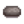
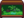
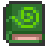
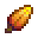
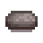
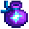
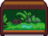

Giant Stump
| Giant Stump | |
 | |
| Address: | Cindersap Forest, west of Marnie's Ranch |
| Occupants: | |
The Giant Stump is located in the northern area of Cindersap Forest to the west of Marnie's Ranch.
It begins as a huge tree with no notable attributes. It becomes the Giant Stump after a strong wind storm fells the tree. Interacting with the stump starts "The Giant Stump" quest. Later, it becomes the home to a raccoon, who populates it with his wife and their children over the course of his request questline.
Questline
Note: After "The Giant Stump" quest, the rest isn't a true "quest" as it is not one of the journaled quests but rather a series of interactable requests, similar to those requests given by the Trash Bear.
Pre-habitation
After the strong wind storm random event occurs, the resulting stump has a "?" dialog which may be interacted with to start "The Giant Stump" quest, where the player must repair the stump with 100 Hardwood.
Raccoon's Requests
The day after the stump is repaired, a raccoon moves in. Following this, he has a series of requests for items, each yielding rewards. The requested items often require the use of various Artisan Equipment, such as the Dehydrator, Fish Smoker, and Preserves Jar.
After completing a request, a new request will be made after 7 days, which is indicated by the appearance of his wife (and later on, children). Completing 9 requests will earn the player the Good Neighbors Achievement, and unlocks a special cutscene that triggers the next time the player visits Cindersap Forest on a sunny day.
The player can continue to complete additional requests for more rewards. The items requested will usually be related to and obtainable in the current season. If a request is generated in the last week (Days 22-28) of any season, then the Raccoon will ask for items related to the following season (e.g., a request made on Spring 24 will ask for Summer items).[1]
First Request
| First Request | ||
|---|---|---|
| Crab Pot Fish (5): Clam, Cockle, Crayfish, Mussel, Oyster, Periwinkle, or Snail | ||
Smoked Fish (1):
| ||
| 25 Seeds (see Note): Carrot Seeds, Summer Squash Seeds, Broccoli Seeds, or Powdermelon Seeds | ||
All 7 Crab Pot fish are equally likely to be chosen (in all seasons).
In Fall, Salmon is twice as likely to be chosen as the rest of the fish, which are all equally likely. In Spring, Summer, and Winter, all fish are equally likely to be chosen.
Second Request
| Second Request | ||
|---|---|---|
Dried Fruit (1):
| ||
Jelly (1):
| ||
| Raccoon Journal (1) | ||
In Winter, Crystal Fruit and Powdermelon are twice as likely to be chosen as Cactus Fruit or Coconut, which are equally likely. In Spring, Summer, and Fall, all fruits are equally likely to be chosen.
Third Request
| Third Request | |||
|---|---|---|---|
| Dried Mushrooms (1): | |||
One of the following:
| |||
 Raccoon Hat (1) | |||
Fourth Request
| Fourth Request | |||
|---|---|---|---|
Pickles (1):
| |||
Juice (1):
| |||
Carrot, Summer Squash, and Broccoli are twice as likely to be chosen as the other vegetables in their respective seasons, which are otherwise equally likely. In Winter, all vegetables are equally likely to be chosen.
Fifth Request
| Fifth Request (2 items chosen at random) | ||
|---|---|---|
 Jungle Tank (1) | ||
Sixth Request and Beyond
| Sixth Request and Beyond | |||
|---|---|---|---|
| Requirements will mimic those of exactly one of the first 5 requests, chosen at random. | |||
One of (at random):
| |||
Note
For the first request the seed that is rewarded depends on the season and date the player completes the request. This also applies to the potential seeds reward for the sixth request and beyond.
| From | Till | Seed | Description |
|---|---|---|---|
| Plant in the spring. Takes 3 days to grow. | |||
| Plant in the summer. Takes 6 days to grow, and continues to produce after first harvest. | |||
| Plant in the fall. Takes 8 days to mature, and continues to produce after first harvest. | |||
| This special melon grows in the winter. Takes 7 days to grow. |
Raccoon Wife's Shop
After completing the Raccoon's first request, his wife may be interacted with to access her shop. Her shop does not use Gold, but rather barters for other items.
Her shop initially offers all seed spot crop seeds. Additional items are unlocked after completing requests.
| Image | Name | Description | Price | Requirement |
|---|---|---|---|---|
 |
Raccoon Journal | Weeds have a greater chance to yield mixed seeds. | 2nd request completed | |
 |
Mahogany Seed | This can be planted to grow a mahogany tree. | 4th request completed | |
 |
Raccoon Hat | A classic hat from the old frontier days. | 3rd request completed | |
| Carrot Seeds | Plant in the spring. Takes 3 days to grow. | N/A | ||
| Summer Squash Seeds | Plant in the summer. Takes 6 days to grow, and continues to produce after first harvest. | N/A | ||
| Broccoli Seeds | Plant in the fall. Takes 8 days to mature, and continues to produce after first harvest. | N/A | ||
| Powdermelon Seeds | This special melon grows in the winter. Takes 7 days to grow. | N/A | ||
| Mixed Seeds | There's a little bit of everything here. Plant them and see what grows! | 4th request completed | ||
 |
Fairy Dust | Sprinkle on kegs, furnaces, and other refining equipment to instantly receive their product. | 6th request completed | |
 |
Jungle Tank | Can be placed inside your house. | 5th request completed | |
| Golden Mystery Box | A blacksmith can open this for you. Who knows what might be inside? | 6th request completed; Foraging Mastery claimed | ||
| Magic Rock Candy | A rare and powerful candy infused with the essence of the prismatic shard. | 6th request completed; Foraging Mastery claimed |
References
History
- 1.6: Introduced.
- 1.6.3: Increased number of Bat Wings and Bug Meat requested from 10 to 20.
- 1.6.4: Added trades using Mystery Boxes and Golden Mystery Boxes. Increased Raccoon Mystery Box reward from 4 to 5. Added a special cutscene after the raccoons have reached max family size. Fixed bug in Multiplayer where it was possible that only the first player that repaired the stump could complete the "The Giant Stump" quest, which prevented other players from progressing.
- 1.6.6: Added Coal for Mahogany Seed trade. Fixed a bug where the Raccoon could disappear during the raccoon cutscene in Multiplayer.
- 1.6.9: Fixed bug where raccoon bundle would accept any variation of the requested artisan good.
| Buildings | ||
|---|---|---|
| Merchants | Abandoned House • Adventurer's Guild • Blacksmith • Bookseller • Carpenter's Shop • Casino • Desert Trader • Fish Shop • Giant Stump • Harvey's Clinic • Ice Cream Stand • Island Trader • JojaMart • Marnie's Ranch • Oasis • Pierre's General Store • Qi's Walnut Room • The Stardrop Saloon • Traveling Cart • Volcano Dwarf • Wizard's Tower | |
| Houses | 1 River Road • 2 River Road • 1 Willow Lane • 2 Willow Lane • 24 Mountain Road • Elliott's Cabin • Farmhouse • Island Farmhouse • Leah's Cottage • Mayor's Manor • Tent • Trailer • Treehouse | |
| Farm Buildings | Farming | Barn • Cabin • Coop • Fish Pond • Greenhouse • Mill • Pet Bowl • Shed • Silo • Slime Hutch • Stable • Well |
| Special | Desert Obelisk • Earth Obelisk • Farm Obelisk • Gold Clock • Island Obelisk • Junimo Hut • Water Obelisk | |
| Other Buildings | Community Center • Dog Pen • Island Field Office • Joja Warehouse • Movie Theater • Museum • Spa • Witch's Hut | |